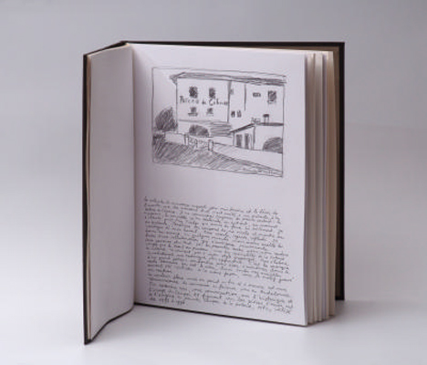

"La Poterie d´Art de Ciboure" est un livre d´artiste
réalisé en 2011, composé de trois textes illustrés
tirés en offset, suivis de sept photos tirées en
héliogravure au grain par l´atelier Hélio´g.
Réalisé en neuf exemplaires présentés en portfolio/étui ou relié. 33x26cm.
Recueil de souvenirs de cette célèbre poterie
avec des photos prises en 1993 et 1996,
dont trois du dernier four du 11-13 décembre 1996